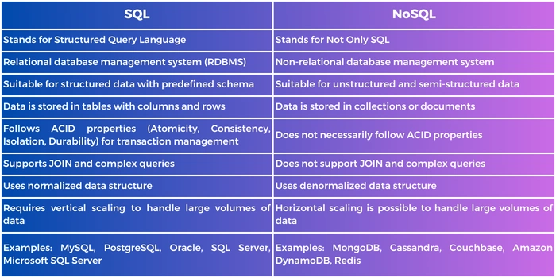

DATABASE & DBMS
1 Data : Raw Fact& Figure
2 Information: Processed Data
3 Database: Organised Collection of Data
(Collection of data strored in paricular
format that we can easily accessed )
Example Shoping list, contact no list (Paper= database,
Shoping List= Collection of data, Pen= Tool like DBMS)
4 DBMS: Database Management System is a Software for
creating and manageing database
It is Frontend and dbatabse is a backend
It is not a lagnuage
(mysql, sqlite, postgress sql, oracle, no sql= mongodb)
5 RDBMS Relational database management system
data arranged in tabular
form rows and columns
6 Rows=Tupple
7 Columns =Attribute
8 Database & RDBMS Founder: Edger F Codd
10 DBMS Founder: Charles Bachman 1960
The first DBMS was developed in the early 1960s
when Charles Bachman created a navigational DBMS
known as the Integrated Data Store.
1 Data Hierarchy
Bits
Bytes/Character
Field (Column)
Record Row
Files (Table)
Database
2 Who Manages Database
DBA : database administrator (create and
maintain databse
compatible with their company needs)
3 Example of Database:
ibm DB2
microsoft Access
microsoft Excel
microsoft sql server
4 Example of DBMS (Software)
mysql
oracle RDBMS
quick base, SAP Sybase,
5 Which language is used for creating database?
DATABASE Language: SQL
6 Structure Query Language SQL
Sql has divided into 5 Types
DQL (Not use Because not present in Oracle Documentation)
DDL, DML, DCL , TCL
7 DBMS 1: SQL
2. NoSQL
8 What is SQL ?
Sql is structured query language
Used for: Manage & organize database data
Developed By = Ibm Researchers= Raymond Boyce & Donald Chamberlin
year 1970 and SQL old name is SEQUEL = structured english query language
10 SQL LANGUAGE
1.DDL:(data definition lagnuage)
Creating database used to create
META DATA : Store meta data (data about
data is called metadata)
Task= create db, alterdb,
truncate db, renamde db, drop table
2.DML: (data manipulation language)
USED TO= Update & Access data
+ manipulatingg data(fetch data from db table)
Task = select, insert, update, merge, locktable
3.DCL: (data control language )
Used to control access to data by Authorization
Task : Grant Revoke (Grant :to give rights
,Revoke :Right pull)
4.TCL: (Transaction control language)
Used to= manage transcation in db
Task Commit,(commit means if transcation has
done it cannot revert back)
Rollback =if transaction has not successful
done then it will revert back
1 Database ACID Property
A atomicity:Either the entire transaction
take place at once or doesnot
happen at all
C consistency: The database must be consistent
before and after the transaction
I Isolation: Multiple Transaction occur
independently without interference
each transaction is unique
D durability : the changes of a successful
transaction occurs even if the
system failure occurs
2 What Is NoSQL
"NoSQL" (Not only SQL) refers to a broad
category of database management systems (DBMS)
that diverge from the traditional relational
database management systems (RDBMS) that use SQL
(Structured Query Language). NoSQL databases are
designed to handle large volumes of structured,
semi-structured, and unstructured data more flexibly
3 Types of NoSQL Database
1. Graph database
2. Column family stores
3. key value stores

4 Keys gives a identity of each data
the 7 different types of keys in DBMS
1 Primary Key
2 Foreign Key
3 Super Key
4 Unique Key(ARtificial Key)
5 Composite Key
6 Alternative Key
7 Candidate Key
5 In the context of databases,
keys are crucial for organizing
and accessing data efficiently.
They help establish relationships
between tables and enforce data integrity
rules. Here are the main types of keys in a database:
1. Primary Key:
Primary cannot be duplicate
A primary key is a unique identifier for
each record (row) in a table.
It must contain unique values
It cannot be NULL.
Each table has only one primary key.
Example: employee_id in an employees table.
2. Foreign Key:
A foreign key is a column of
table that refers to the primary key
in another table.
It establishes a link between
two tables, enforcing referential integrity.
Example: department_id in an employees table,
referring to the department_id primary key in
a departments table.
Means one column is similar in two different table
3. Unique Key:
A unique key ensures that all values in a
column (or set of columns) are unique.
Unlike a primary key, it can contain NULL
values (but only one NULL per column if
the key is single-column).
Example: email column in a users table might
be a unique key to ensure no two users have
the same email address.
4. Composite Key:
A composite key is a key that consists of more
than one column to uniquely identify a record.
Together, the combination of columns must be unique.
Example: A combination of product_id and store_id in
a stock table might form a composite key to uniquely
identify inventory records for specific products in
specific stores.
5. Super Key:
Super key is group of single or multiple Keys
which identifies rows in a table
A super key is a set of one or more columns that can
uniquely identify a record within a table.
It may include more columns than necessary to
uniquely identify a record.
Example: A combination of customer_id, order_id,
and order_date in an orders table could form a super key.
6. Candidate Key:
candidate key is a signle column or more than
one column like name,rollnumber , email phone number
are candidate key
Q.1: What is a Unique Key?
Unique Keys are the keys that define the
record uniquely in the table. It is different
from Primary Keys, as Unique Key can contain
one NULL value but Primary Key does not contain
any NULL values.
Q.2: Why keys are necessary for DBMS?
Keys are one of the important aspects of DBMS.
Keys help us to find the tuples(rows) uniquely
in the table.It is also used in developing various
relations amongst columns or tables of the database.
Alternate Key
The candidate key other than the primary key is called an alternate key.
All the keys which are not primary keys are called alternate keys.
It is a secondary key.
It contains two or more fields to identify two or more records.
These values are repeated.
Eg:- SNAME, and ADDRESS is Alternate keys
Example:
Artificial
An artificial key in databases refers to
a type of key that is created specifically
for the purpose of uniquely identifying records
within a table. Unlike a natural key, which is
derived from data that already exists within the database
(such as a person's social security number or an employee's
email address), an artificial key is generated solely for database
management purposes.
SQL (Structured Query Language) is a standard programming
language designed for managing and querying relational databases.
Here are some key aspects and features of SQL:
Data Querying: SQL allows users to retrieve and manipulate data
stored in a relational database. The SELECT statement
is used to query data from one or more tables.
Data Manipulation: SQL provides commands like INSERT, UPDATE,
and DELETE to manipulate data in the database
tables. These commands allow users to add new records,
modify existing ones, and delete unnecessary data.
Data Definition: SQL includes commands such as CREATE, ALTER, and DROP for
defining and managing database schema and structures. These
commands are used to create new tables, modify existing table
structures, and drop tables or other database objects.
Data Control: SQL provides commands like GRANT and REVOKE to control access
to the database objects. These commands manage user permissions
and security settings, ensuring data integrity and confidentiality.
Transactions: SQL supports transactional processing, allowing multiple SQL
statements to be grouped together into a single unit of work.
This ensures that either all operations within the transaction
are successfully completed (COMMIT), or none of them are (ROLLBACK),
maintaining database consistency.
Constraints: SQL allows users to define constraints such as PRIMARY KEY,
FOREIGN KEY, UNIQUE, and CHECK constraints. These constraints
enforce data integrity rules and ensure that data stored in the
database remains accurate and consistent.
Joins: SQL supports different types of joins (INNER JOIN, LEFT JOIN, RIGHT JOIN,
FULL JOIN) to combine rows from two or more tables based on a related
column between them. Joins enable complex queries that retrieve data
from multiple tables simultaneously.
Aggregation: SQL provides aggregate functions (SUM, AVG, MIN, MAX, COUNT) to perform
calculations on sets of rows. These functions allow users to summarize
and analyze data stored in the database.
Subqueries: SQL supports subqueries, allowing users to nest one query within another.
Subqueries can be used to retrieve data conditionally or to perform
calculations based on the results of another query.
Views: SQL allows users to create virtual tables known as views. Views are defined
by queries and present data from one or more tables in a structured format.
They can simplify complex queries and provide a layer of abstraction over
the underlying database schema.
SQL is a declarative language, meaning users specify what data
they want to retrieve or manipulate without necessarily specifying
how to do it. Different database management systems (DBMS) implement
SQL with slight variations, often referred to as dialects.Common
SQL-based DBMS include PostgreSQL, MySQL, SQLite, Oracle Database, Microsoft
SQL Server, and others.
In the context of databases, a constraint
is a rule or restriction applied to data in
a database table. Constraints enforce specific
conditions that the data must meet, ensuring data
integrity and helping to maintain the accuracy and
reliability of the data within the database.